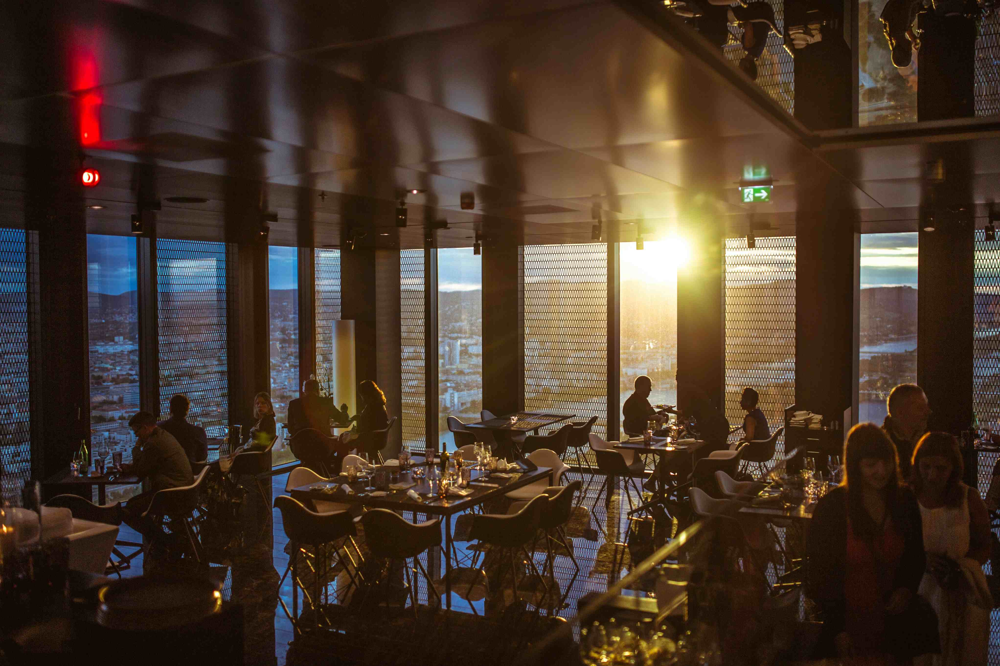

|  |
Mijn werkervaring tot op heden is dat ik voor ongeveer 3 jaar nu hulp ben bij restaurant den Eyck in Kasterlee. Ik vertrouw erin dat ik wel wat managing skills heb doordat ik de lead manager was voor een online gemeenschap voor een interest groep met meer dan 6000 leden. In mijn vrije tijd ben ik ook vooral bezig met digital art (al voor meer dan 5 jaar nu) en gebruik professionele programma's zoals Clip Studio Paint Pro en PaintTool SAI met een klein beetje ervaring in Photoshop. Een toekomstige goal van mij is om merchandise online te verkopen en heb ook al een kleine fanbase waar meeste hebben uitgedrukt dat ze van mij zouden kopen, inclusief grote artiesten in die community waar ik in zit met grote sales. Ook al heb ik momenteel niet zo veel ervaring, ik heb wel een aantal connecties met anderen die afgestudeerde game/concept artists/designers zijn of mensen die werken in IT en vooraf ook developers zijn. |
|
In het algemeen had ik door studies niet veel tijd om enige werkervaring op te doen, maar ik geloof wel dat ik de nodige skills heb om mezelf snel aan te passen aan de werkomgeving. Mijn vorige studie was dan toegepaste taalkunde aan de Universiteit van Antwerpen voor 2 jaar met als talen Engels en Spaans (naast Nederlands ook natuurlijk.) voordat ik ben veranderd naar Thomas More voor de graduaat programmeren. Momenteel ben ik bezig aan de opleiding aan Thomas More voor programmeren en heb momenteel een beetje ervaring aan C#, html en CSS. In de toekomst zal ik ook meer ervaring hebben hierin met ook andere talen zoals Javascript. |